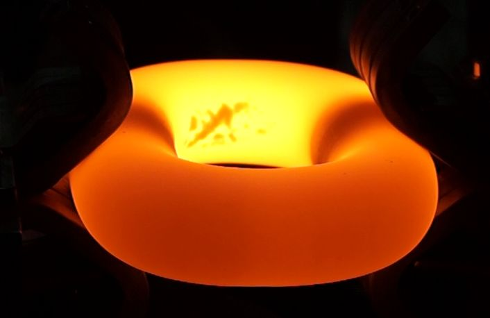
Vergütung im Takt — jedes Glied mit reproduzierbarem Gefüge
RayCube ist die modulare NIR-Expansionsanlage für die dezentrale Produktion von RayBall — expandiertem Perlit aus Vulkansand als geschlossenzelligem, nicht brennbarem Leichtzuschlag und Dämmstoff für die Bauindustrie.
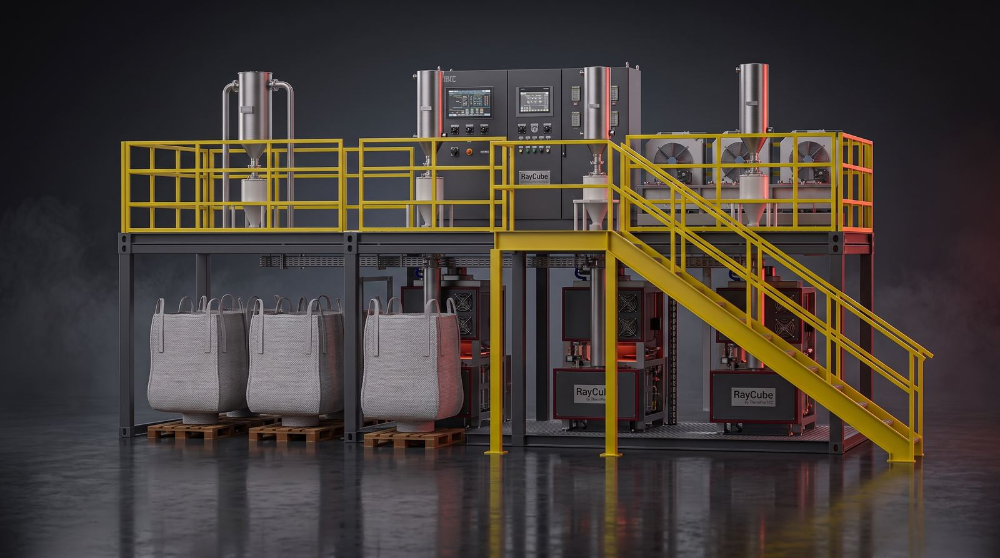
Jede RayCube-Anlage besteht aus vier aufeinander abgestimmten Modulen auf einer mobilen Zwei-Ebenen-Containerplattform. Aufstellung ohne Fundament, Erweiterung von 1 auf 3 oder 6 Module im Baukastenprinzip.
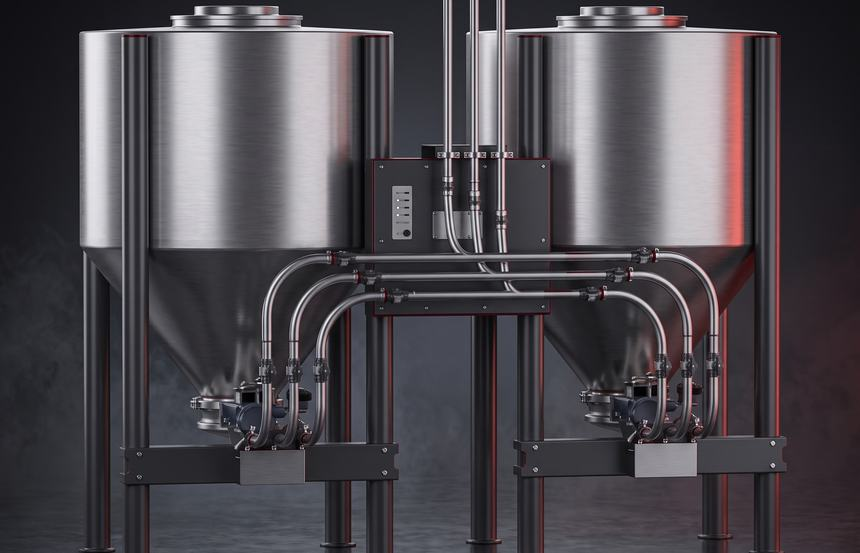
Silo- oder Big-Bag-Aufnahme, Vakuumförderung, volumenstromgeregelte Dosierung des Rohmaterials.
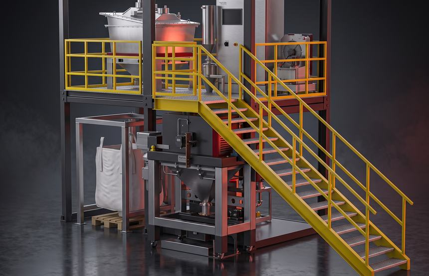
Der Expansionskern: NIR-Radiatorfeld und Vibrationsplatte expandieren das Korn — 1, 3 oder 6 Module parallel.
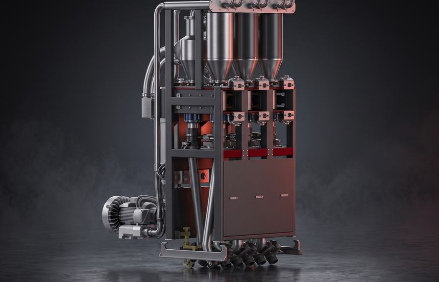
Trennung RayBall/RayDust, Gewichtsmessung, Übergabe an Silo oder Big Bag.
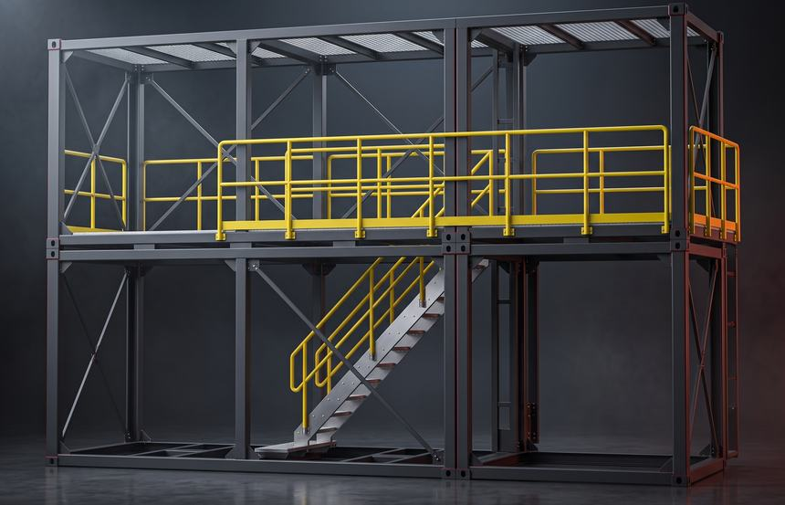
Zwei-Ebenen-Plattform mit Steuerung, Infrastruktur und Zugang — mobil oder stationär.
| Kennwert | 1× RayCube | 3× RayCube | 6× RayCube |
|---|---|---|---|
| Produktionskapazität | ~1.700 m³/a | ~5.100 m³/a | ~10.200 m³/a |
| Rohmaterialrate | 55 kg/h | 165 kg/h | 330 kg/h |
| Anschlussleistung | 75 kW | 225 kW | 450 kW |
| Containerplattform | 10 ft + 20 ft | 2× 20 ft | 3× 20 ft |
Das patentierte ReCube-Verfahren ersetzt energieintensive Vertikalöfen: NIR-Strahlung dringt in das Korn ein und verdampft das gebundene Kristallwasser schlagartig — das Korn bläht sich auf und verglast an der Oberfläche.
Vulkanisches Rhyolith-Granulat (Silizium-Basis) — dicht transportiert, keine Luft im LKW.
NIR-Strahler verdampfen das gebundene Kristallwasser schlagartig; Resonanzvibration führt jedes Korn präzise durch die Prozesszone und verhindert Verkleben. Sofort schaltbar — kein Aufheizen, kein Nachlauf.
Geschlossenzellig, oberflächlich verglast. Zieldichte als Prozessparameter: 120–350 g/l.
NIR-Strahlung wirkt direkt im Volumen des Korns — Konvektion und Kontaktwärme spielen kaum eine Rolle. Das macht den Prozess schnell, präzise steuerbar und energieeffizient.
* Eigene Vergleichsmessungen (λ bei 200 g/l; Bereich je nach Schüttdichte). Zertifizierung nach EN 13501-1 in Vorbereitung.
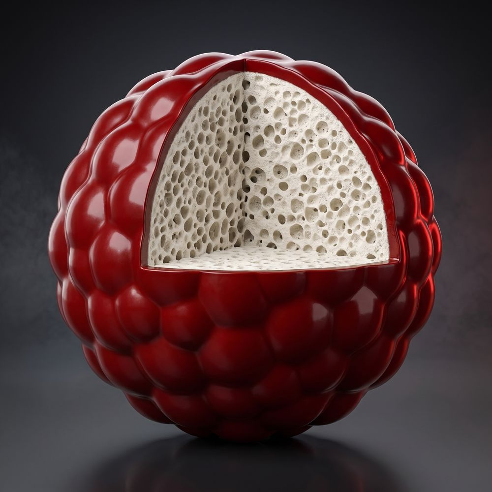
Expandierter Dämmstoff ist zu über 90 % Luft. RayCube dreht die Logistik um: Dichtes Rohmaterial fährt zum Kunden, expandiert wird vor Ort — bis zu 80 % weniger Transportaufwand und eine massiv bessere CO₂-Bilanz.
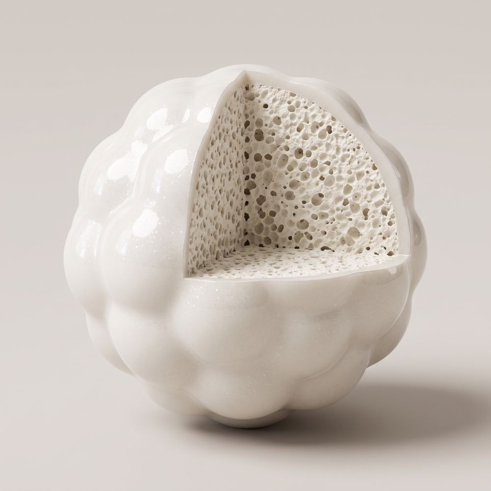
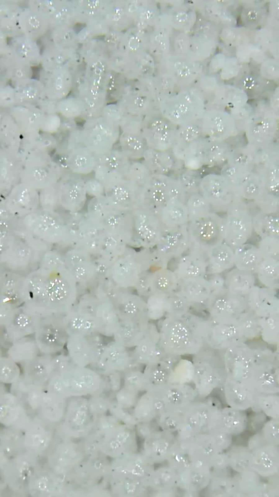
Anorganisches Vulkanglas — keine Rauchgase, kein Abtropfen, formstabil über 1.100 °C.
Das Granulat fließt in jede Kavität — fugenlos, ohne Zuschnitt, ohne Wärmebrücken.
Verglaste Außenhaut ohne Kapillarwirkung (Wasseraufnahme < 2 %), Schüttung diffusionsoffen (μ ≈ 3).
Kein Nährboden für Schädlinge; am Lebensende Wiederverwendung oder Rückgabe als Bodenverbesserer.
Zwei Betrachtungen: Make-or-Buy — Sie ersetzen zugekauftes Material durch Eigenproduktion und rechnen mit Ihrem heutigen Einkaufspreis inklusive Fracht — oder Produktion & Verkauf mit Ihrer Erlösannahme. Wir zeigen unsere Produktionskosten je Tonne ab Werk; Referenzpreis, Fracht und Investitionsbudget sind Annahmen, die Sie durch Ihre eigenen Werte ersetzen. Unverbindliche Modellrechnung, alle Werte netto.
Annahmen ohne Gewähr: Referenzpreise für mineralische Leichtzuschläge (Blähglas-Granulat) liegen je nach Qualität in der Größenordnung von 1.000 €/t (Standard) bis 2.000 €/t (High-End, Feinfraktion). Fracht: Ein LKW-Transport kostet in der Regel ab 1.000 €; wegen der geringen Schüttdichte passen nur rund 4 t auf einen Sattelzug — das entspricht mindestens ~250 €/t. Ersetzen Sie die Annahmen durch Ihre eigenen Einkaufskonditionen; alle Felder sind editierbar. Das verbindliche Investitionsvolumen für Ihre Konfiguration erhalten Sie mit unserem Angebot.
Alle Komponenten mit technischer Spezifikation — transparent bis auf Positionsebene. Die fertige Konfiguration senden Sie uns mit einem Klick als Anfrage; das passende Angebot erhalten Sie innerhalb von fünf Werktagen.
Technische Angaben freibleibend; Lieferzeit ca. 6 Monate ab Auftragsklärung. Das Angebot mit Preisen und Konditionen erstellen wir individuell zu Ihrer Konfiguration.
Härte, Zugfestigkeit, Dehnung, Kerbschlagarbeit — die vier Kennwerte einer Kette entstehen in der Wärmebehandlung. ThermProTEC liefert dafür das komplette Anlagenportfolio: Vergütelinien, Einzelglied-Behandlung, Bolzenerwärmung, Biegelinien und Beschichtung — Rund- und Flachketten D4–D70 für Mining und Hebetechnik, inline im Produktionstakt.

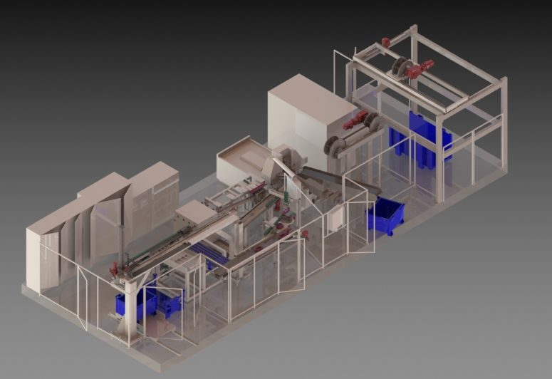
SCT-Vergütelinie: modularer Aufbau — Härten, SLZ-Anlassen, Schenkelanlassen
Kontinuierliche Q&T-Linien in fünf Baugrößen (D6–D60): Härten, Anlassen, Schenkelanlassen. Zwei-Zonen-Härtung und die proprietäre SLZ-Technologie (Smart Levelling Zones) halten die Anlasstemperatur auf ±10 K über Bug und Schenkel — wahlweise unter Schutzatmosphäre.
Inline-Biegelinien für schwere Ketten von D34 bis D60 — Warmbiegen im Produktionstakt statt Einzelfertigung.
Konduktive Vergütung von Verbindungsgliedern (D4–D72) und induktive bzw. konduktive Bolzenerwärmung als Vorstufe des Warmbiegens.
NIR-Sofortrocknung für die Inline-Kettenbeschichtung; dazu Schweiß- und Kalibriertechnik sowie Zahnradhärten auf Anfrage.
Induktion, Konduktion, NIR und Heißluft aus einem Haus — ersetzt klassische Gasöfen durch induktive Präzision. Europäisches Engineering, weltweite Integration mit Vertretungen in Asien.
Neben dem RayCube-System entwickelt und baut ThermProTEC CNC-gesteuerte Induktionshärtemaschinen. Die Vector vergütet Lenkzahnstangen — Härten und Anlassen in einer Anlage, im Serieneinsatz bei führenden Herstellern von Lenksystemen weltweit.
Dreigeteilter Rundtisch: Beladen (manuell oder per Roboter), Prozess, Entnahme — beide Wärmebehandlungen ohne Umspannen, pneumatisches Prismenspannsystem mit Positionsprüfung.
Speziell geformte Induktoren mit Feldkonzentratoren und kontinuierlicher Abstandsregelung über zwei Messsysteme — exakte Einhärtetiefe entlang der Verzahnung.
150 kW Härten + 30 kW Anlassen bei 6–10 kHz. Alle Achsen CNC-gesteuert (Siemens Sinumerik): zwei Vertikalachsen für die Heizkreise, drei Servoachsen am Rundtisch.
Ringbrause für das Abschrecken; automatische Überwachung von Quenchwassermenge, Brix-Konzentration, Temperatur und Energiemenge; Vliesfilter zur Medienaufbereitung.
Das Vector-Konzept ist auf weitere Bauteile adaptiert — etwa Großwellen. Für horizontales Härten steht das Schwestermodell Hector zur Verfügung.
ThermProTEC liefert die Kerntechnologien der Stabilisatorfertigung als schlüsselfertige Linien — vom Einzelsystem bis zur kompletten Werksausrüstung, im Serieneinsatz bei führenden Stabilisatorenherstellern.
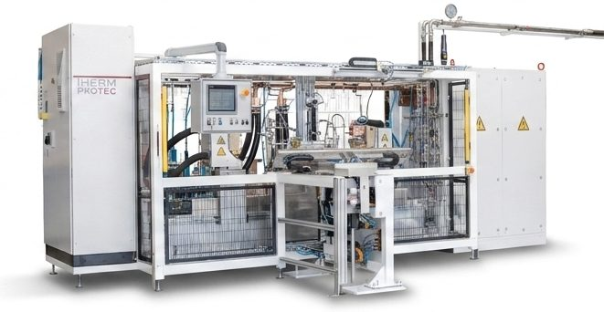
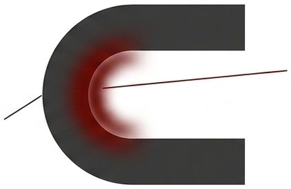
Die Biegegeometrie bestimmt den Stromfluss: Innenradius heiß, Außenradius kalt. Die SSH-Regelung hält die Randschicht trotzdem homogen.
Der Stabilisator wird als eigener Widerstand direkt vom Strom erwärmt — bis 12.000 A über pneumatische Stromgreifer; eine Servoachse gleicht die Wärmeausdehnung aus. Heizzeiten 12–25 s, bis zu fünf verfahrbare Pyrometer, patentiertes SAS-Luftkühlsystem gegen Wandstärkenvariation.
Spray-Quench mit Portalhandling und Express-Anlassen mit Luftkühlung — als komplette Vergütelinie mit 25 s Taktzeit und bis zu 1,6 t/h Durchsatz.
Robotergeführte Schmiedelinie mit induktiver Endenerwärmung (Pyrometerüberwachung je Spule) und 4-Stationen-Augenpresse — wechselseitiger Zwei-Spulen-Betrieb für einen durchgängigen Arbeitstakt.
Modularer Baukasten von der Buchsenmontage über Omega-/Tox-Pressen bis zu Prüfsystemen, Etikettierung und automatischer Verpackung — Zykluszeit und QS-Tiefe projektspezifisch kombinierbar.
Roboterhandling (SRH), Quench (SQS), Anlassofen (STU) und Montagetechnik kommen aus einem Haus — inklusive Prozessentwicklung und Produktionsbegleitung.
Ihre Auswahl aus dem Konfigurator wird automatisch übernommen. Ergänzen Sie Ihre Kontaktdaten und die Eckdaten zum Vorhaben — wir melden uns innerhalb von zwei Werktagen und liefern das schriftliche Angebot innerhalb von fünf Werktagen.